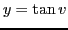
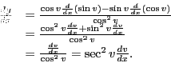
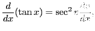

Next:
Differentiation of
Up:
Rules for differentiating standard
Previous:
Differentiation of
Contents
Index
Differentiation of
Let

. By item 27, §
1.1
, this may be written

Therefore,

(equation (XIII) in §
5.1
above).
david joyner 2008-08-11